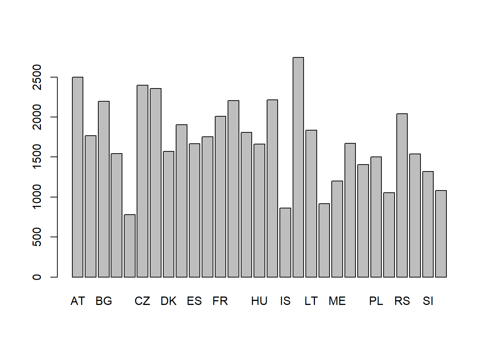
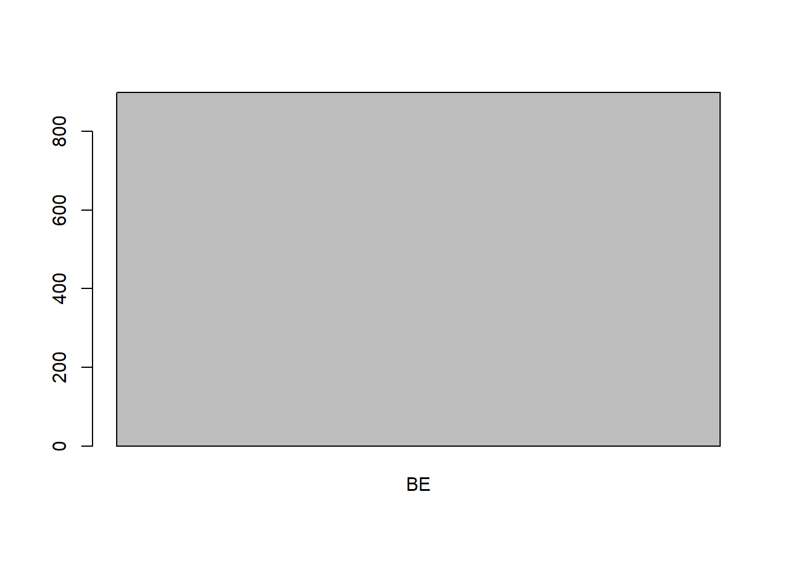
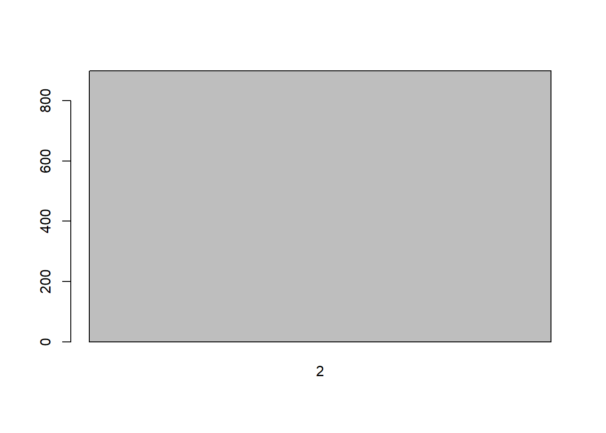
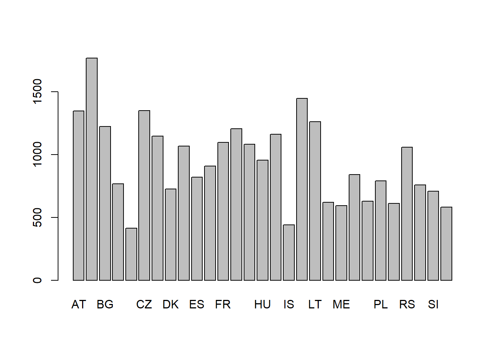

Chapitre 3 Distribution des salaires des Belges: probabilités dans une distribution normale
Dans ce chapitre nous allons étudier les salaires des Belges, afin d’apprendre à filtrer et modifier les données et comprendre la distribution normale et les calculs de probabilités que l’on peut effectuer avec cette distribution. Cela sert notamment à comprendre les intervalles de confiances.
Si vous avez éteint R dpuis le dernier chapitre, il faudra lancer les packages avant de reprendre les analyses. À cette fin exécutez les commandes suivantes:
if (!require("pacman")) install.packages("pacman") #Cela vérifie
#si le package pacman est installé.
#S'il ne l'est pas, il est installé.
pacman::p_load(tidyverse, descr, rcompanion, codebook,
DT, sjPlot, labelled) #On lance les packages3.1 Charger des données au format R (.RDS)
Pour commencer nos analyses, il faut charger les données. Dans le chapitre précédent, nous avons vu comment importer des données depuis le format SPSS (suffixe .sav) et comment les enregistrer au format “RDS” de R. Nous avions enregistré la base de données de ’l’Enquête sociale européenne/European social survey (ESS) “ESS 9” sous le nom “ESS9.RDS”. Nous allons à présent chargé ce fichier pour continuer nos analyses avec cette base de données.
Assurez-vous que le fichier “ESS9.RDS” se trouve dans votre espace de travail. Si vous ne l’avez pas, effectuez les étapes décrites dans le chapitre précédent16. Chargez donc le fichier à l’aide de la commande readRDS():
ESS9<-readRDS("ESS9.RDS")#Vous nommez la base de données ESS9Lorsque vous chargez une base de données (ou un autre objet R) à l’aide de la fonction “readRDS()”, il faut lui attribuer un nom sous lequel le charger dans l’espace de travail. Ici nous le faisons en plaçant une flèche (<-) à gauche de la fonction et en indiquant le nom de l’objet au bout de cette flèche: ESS9. Si vous ne nommez pas l’objet, et écrivez simplement la commande sans lui attribuer de nom, la base de données apparaîtra certes dans la sortie de la console, mais ne sera pas enregistré dans l’environnement global. Vous ne pourrez alors pas faire d’analyse avec cette base de données. Assurez-vous que l’objet est bien chargé en vérifiant s’il apparaît dans l’onglet “Environment” à droite dans RStudio. Par ailleurs, faites vous afficher l’objet en exécutant le code suivant:
ESS9 #En exécutant le nom de l'objet, il s'affiche## # A tibble: 49,519 × 572
## name essro…¹ edition prodd…² idno cntry dweight pspwght pweight anwei…³ nwspol netus…⁴ netustm ppltrst pplfair pplhlp polintr pspps…⁵ actro…⁶ psppi…⁷ cptpp…⁸ trstprl trstlgl trstplc
## <chr> <dbl> <chr> <chr> <dbl> <chr+lb> <dbl> <dbl> <dbl> <dbl> <dbl+> <dbl+l> <dbl+l> <dbl+l> <dbl+l> <dbl+> <dbl+l> <dbl+l> <dbl+l> <dbl+l> <dbl+l> <dbl+l> <dbl+lb> <dbl+lb>
## 1 ESS9e03… 9 3.1 17.02.… 27 AT [Aus… 0.581 0.218 0.302 0.0659 60 5 [Eve… 180 2 [2] 2 [2] 2 [2] 3 [Har… 3 [Som… 2 [A l… 2 [Ver… 2 [A l… 5 [5] 10 [Com… 10 [Com…
## 2 ESS9e03… 9 3.1 17.02.… 137 AT [Aus… 1.06 0.413 0.302 0.125 10 5 [Eve… 20 7 [7] 8 [8] 7 [7] 2 [Qui… 3 [Som… 2 [A l… 3 [Som… 2 [A l… 7 [7] 8 [8] 8 [8]
## 3 ESS9e03… 9 3.1 17.02.… 194 AT [Aus… 1.38 2.27 0.302 0.686 60 4 [Mos… 180 5 [5] 7 [7] 7 [7] 4 [Not… 2 [Ver… 1 [Not… 3 [Som… 2 [A l… 6 [6] 8 [8] 8 [8]
## 4 ESS9e03… 9 3.1 17.02.… 208 AT [Aus… 0.993 0.386 0.302 0.117 45 5 [Eve… 120 3 [3] 9 [9] 5 [5] 3 [Har… 2 [Ver… 2 [A l… 3 [Som… 1 [Not… 0 [No … 5 [5] 8 [8]
## 5 ESS9e03… 9 3.1 17.02.… 220 AT [Aus… 0.377 1.03 0.302 0.312 30 1 [Nev… NA 5 [5] 8 [8] 4 [4] 2 [Qui… 1 [Not… 1 [Not… 1 [Not… 3 [Qui… 7 [7] 8 [8] 8 [8]
## 6 ESS9e03… 9 3.1 17.02.… 254 AT [Aus… 1.48 0.576 0.302 0.174 45 2 [Onl… NA 8 [8] 7 [7] 6 [6] 2 [Qui… 2 [Ver… 2 [A l… 3 [Som… 2 [A l… 6 [6] 5 [5] 7 [7]
## 7 ESS9e03… 9 3.1 17.02.… 290 AT [Aus… 0.992 0.721 0.302 0.218 60 1 [Nev… NA 6 [6] 1 [1] 3 [3] 4 [Not… 2 [Ver… 2 [A l… 3 [Som… 2 [A l… 0 [No … 5 [5] 5 [5]
## 8 ESS9e03… 9 3.1 17.02.… 301 AT [Aus… 0.310 0.130 0.302 0.0393 30 1 [Nev… NA 7 [7] 7 [7] 7 [7] 3 [Har… 1 [Not… 1 [Not… 1 [Not… 2 [A l… 5 [5] 7 [7] 7 [7]
## 9 ESS9e03… 9 3.1 17.02.… 305 AT [Aus… 1.23 1.77 0.302 0.535 30 5 [Eve… 120 2 [2] 9 [9] 9 [9] 3 [Har… 1 [Not… 1 [Not… 1 [Not… 4 [Ver… 1 [1] 10 [Com… 10 [Com…
## 10 ESS9e03… 9 3.1 17.02.… 400 AT [Aus… 0.459 0.743 0.302 0.224 25 4 [Mos… 360 7 [7] 4 [4] 4 [4] 4 [Not… 2 [Ver… 2 [A l… 2 [Ver… 1 [Not… 3 [3] 5 [5] 5 [5]
## # … with 49,509 more rows, 548 more variables: trstplt <dbl+lbl>, trstprt <dbl+lbl>, trstep <dbl+lbl>, trstun <dbl+lbl>, vote <dbl+lbl>, prtvtcat <dbl+lbl>, prtvtdbe <dbl+lbl>,
## # prtvtdbg <dbl+lbl>, prtvtgch <dbl+lbl>, prtvtbcy <dbl+lbl>, prtvtecz <dbl+lbl>, prtvede1 <dbl+lbl>, prtvede2 <dbl+lbl>, prtvtddk <dbl+lbl>, prtvtgee <dbl+lbl>, prtvtees <dbl+lbl>,
## # prtvtdfi <dbl+lbl>, prtvtdfr <dbl+lbl>, prtvtcgb <dbl+lbl>, prtvtahr <dbl+lbl>, prtvtfhu <dbl+lbl>, prtvtcie <dbl+lbl>, prtvtcis <dbl+lbl>, prtvtcit <dbl+lbl>, prtvblt1 <dbl+lbl>,
## # prtvblt2 <dbl+lbl>, prtvblt3 <dbl+lbl>, prtvtalv <dbl+lbl>, prtvtme <dbl+lbl>, prtvtgnl <dbl+lbl>, prtvtbno <dbl+lbl>, prtvtdpl <dbl+lbl>, prtvtcpt <dbl+lbl>, prtvtrs <dbl+lbl>,
## # prtvtcse <dbl+lbl>, prtvtfsi <dbl+lbl>, prtvtdsk <dbl+lbl>, contplt <dbl+lbl>, wrkprty <dbl+lbl>, wrkorg <dbl+lbl>, badge <dbl+lbl>, sgnptit <dbl+lbl>, pbldmn <dbl+lbl>, bctprd <dbl+lbl>,
## # pstplonl <dbl+lbl>, clsprty <dbl+lbl>, prtcldat <dbl+lbl>, prtcldbe <dbl+lbl>, prtcldbg <dbl+lbl>, prtclgch <dbl+lbl>, prtclbcy <dbl+lbl>, prtclecz <dbl+lbl>, prtclede <dbl+lbl>,
## # prtclddk <dbl+lbl>, prtclgee <dbl+lbl>, prtclfes <dbl+lbl>, prtclefi <dbl+lbl>, prtclffr <dbl+lbl>, prtclcgb <dbl+lbl>, prtclahr <dbl+lbl>, prtclghu <dbl+lbl>, prtcleie <dbl+lbl>, …Si vous n’avez pas enregistré le fichier dans votre espace de travail, mais que vous voulez malgré tout le charger, vous pouvez indiquer le sentier entier en argument comme montré dans la section Espace de travail. Si vous utilisez Windows, vous pouvez aussi utiliser la fonction choose.files(), comme montré dans la section Importer et enregistrer des données:
ESS9<-readRDS(choose.files())Une fois les données importés, nous pouvons avancer sur les manipulations et les analyses.
3.2 Explorer les données: créer un codebook interactif
Nous avons la base de données de l’ensemble du “round” 9 de l’Enquête sociale européenne/European social survey (ESS). Quels pays a-t-il dans cette base de données?
Pour répondre à cette question, il faut savoir dans quelle variable cette information est stoquée. Un codebook nous permet de répondre à cette question. Un codebook est un dócument résumant les variables avec lerus nom, leurs libellés et les libellés des variables. Des logiciels tels que Stata et SPSS proposent d’office cette possibilité. Ainsi SPSS propose l’onglet “Variable View” qui permet de se faire une idée des variables. À première vue, R semble moins convivial pour afficher les variables. Cependant, rien n’est plus faux: en effet, l’on peut créer un codebook à l’aide du package codebook. Ce codebook devient interactif, si l’on le combine avec la fonction datatable du package DT.
Il faut tout d’abord créer le codebook avec la fonction codebook_table. Nous l’appelons codebook_ESS9:
codebook_ESS9 <- codebook_table(ESS9)Ensuite, vous rendez ce codebook interactif avec la fonction datatable(). Ici, vous créez l’objet codebook_ESS9_DT:
codebook_ESS9_DT <- datatable(codebook_ESS9, options = list(scrollX = TRUE))Notons que chez vous, il devrait suffir d’exécuter le code ainsi, sans ajouter l’option pour ajouter une baree de défilement horizontale (“options = list(scrollX = TRUE)”):
codebook_ESS9_DT <- datatable(codebook_ESS9)Vous pouvez afficher ce codebook de la manière suivante:
codebook_ESS9_DTVous pouvez chercher des termes et des expressions dans le champ “Search”. Si vous y cherchez “country” (pays), on vous affichera les variables où ce terme apparaît: vous verrez apparaître la variable “cntry” reprend les pays. Quels pays sont représentés dans cette base de données?
Pour répondre à cette question, il faut sélectionner la variable “cntry” et l’analyser. Mais comment sélectionne-t-on une variable? Dans le R de base, l’on utilise le signe dollar ($) que l’on appose au nom de la base de données. Cela extrait cette variable en tant que vecteur. Concrètement cela se fait ainsi:
ESS9$cntry## <labelled<character>[49519]>: Country
## [1] AT AT AT AT AT AT AT AT AT AT AT AT AT AT AT AT AT AT AT AT AT AT AT AT AT AT AT AT AT AT AT AT AT AT AT AT AT AT AT AT AT AT AT AT AT AT AT AT AT AT AT AT AT AT AT AT AT AT AT AT AT AT
## [63] AT AT AT AT AT AT AT AT AT AT AT AT AT AT AT AT AT AT AT AT AT AT AT AT AT AT AT AT AT AT AT AT AT AT AT AT AT AT AT AT AT AT AT AT AT AT AT AT AT AT AT AT AT AT AT AT AT AT AT AT AT AT
## [125] AT AT AT AT AT AT AT AT AT AT AT AT AT AT AT AT AT AT AT AT AT AT AT AT AT AT AT AT AT AT AT AT AT AT AT AT AT AT AT AT AT AT AT AT AT AT AT AT AT AT AT AT AT AT AT AT AT AT AT AT AT AT
## [187] AT AT AT AT AT AT AT AT AT AT AT AT AT AT AT AT AT AT AT AT AT AT AT AT AT AT AT AT AT AT AT AT AT AT AT AT AT AT AT AT AT AT AT AT AT AT AT AT AT AT AT AT AT AT AT AT AT AT AT AT AT AT
## [249] AT AT AT AT AT AT AT AT AT AT AT AT AT AT AT AT AT AT AT AT AT AT AT AT AT AT AT AT AT AT AT AT AT AT AT AT AT AT AT AT AT AT AT AT AT AT AT AT AT AT AT AT AT AT AT AT AT AT AT AT AT AT
## [311] AT AT AT AT AT AT AT AT AT AT AT AT AT AT AT AT AT AT AT AT AT AT AT AT AT AT AT AT AT AT AT AT AT AT AT AT AT AT AT AT AT AT AT AT AT AT AT AT AT AT AT AT AT AT AT AT AT AT AT AT AT AT
## [373] AT AT AT AT AT AT AT AT AT AT AT AT AT AT AT AT AT AT AT AT AT AT AT AT AT AT AT AT AT AT AT AT AT AT AT AT AT AT AT AT AT AT AT AT AT AT AT AT AT AT AT AT AT AT AT AT AT AT AT AT AT AT
## [435] AT AT AT AT AT AT AT AT AT AT AT AT AT AT AT AT AT AT AT AT AT AT AT AT AT AT AT AT AT AT AT AT AT AT AT AT AT AT AT AT AT AT AT AT AT AT AT AT AT AT AT AT AT AT AT AT AT AT AT AT AT AT
## [497] AT AT AT AT AT AT AT AT AT AT AT AT AT AT AT AT AT AT AT AT AT AT AT AT AT AT AT AT AT AT AT AT AT AT AT AT AT AT AT AT AT AT AT AT AT AT AT AT AT AT AT AT AT AT AT AT AT AT AT AT AT AT
## [559] AT AT AT AT AT AT AT AT AT AT AT AT AT AT AT AT AT AT AT AT AT AT AT AT AT AT AT AT AT AT AT AT AT AT AT AT AT AT AT AT AT AT AT AT AT AT AT AT AT AT AT AT AT AT AT AT AT AT AT AT AT AT
## [621] AT AT AT AT AT AT AT AT AT AT AT AT AT AT AT AT AT AT AT AT AT AT AT AT AT AT AT AT AT AT AT AT AT AT AT AT AT AT AT AT AT AT AT AT AT AT AT AT AT AT AT AT AT AT AT AT AT AT AT AT AT AT
## [683] AT AT AT AT AT AT AT AT AT AT AT AT AT AT AT AT AT AT AT AT AT AT AT AT AT AT AT AT AT AT AT AT AT AT AT AT AT AT AT AT AT AT AT AT AT AT AT AT AT AT AT AT AT AT AT AT AT AT AT AT AT AT
## [745] AT AT AT AT AT AT AT AT AT AT AT AT AT AT AT AT AT AT AT AT AT AT AT AT AT AT AT AT AT AT AT AT AT AT AT AT AT AT AT AT AT AT AT AT AT AT AT AT AT AT AT AT AT AT AT AT AT AT AT AT AT AT
## [807] AT AT AT AT AT AT AT AT AT AT AT AT AT AT AT AT AT AT AT AT AT AT AT AT AT AT AT AT AT AT AT AT AT AT AT AT AT AT AT AT AT AT AT AT AT AT AT AT AT AT AT AT AT AT AT AT AT AT AT AT AT AT
## [869] AT AT AT AT AT AT AT AT AT AT AT AT AT AT AT AT AT AT AT AT AT AT AT AT AT AT AT AT AT AT AT AT AT AT AT AT AT AT AT AT AT AT AT AT AT AT AT AT AT AT AT AT AT AT AT AT AT AT AT AT AT AT
## [931] AT AT AT AT AT AT AT AT AT AT AT AT AT AT AT AT AT AT AT AT AT AT AT AT AT AT AT AT AT AT AT AT AT AT AT AT AT AT AT AT AT AT AT AT AT AT AT AT AT AT AT AT AT AT AT AT AT AT AT AT AT AT
## [993] AT AT AT AT AT AT AT AT
## [ reached getOption("max.print") -- omitted 48519 entries ]
##
## Labels:
## value label
## AT Austria
## BE Belgium
## BG Bulgaria
## CH Switzerland
## CY Cyprus
## CZ Czechia
## DE Germany
## DK Denmark
## EE Estonia
## ES Spain
## FI Finland
## FR France
## GB United Kingdom
## HR Croatia
## HU Hungary
## IE Ireland
## IS Iceland
## IT Italy
## LT Lithuania
## LV Latvia
## ME Montenegro
## NL Netherlands
## NO Norway
## PL Poland
## PT Portugal
## RS Serbia
## SE Sweden
## SI Slovenia
## SK SlovakiaPour savoir quels pays sont dans la base de données, l’on peut utiliser la fonction table(), qui résume les données sous forme de tableau:
table(ESS9$cntry)##
## AT BE BG CH CY CZ DE DK EE ES FI FR GB HR HU IE IS IT LT LV ME NL NO PL PT RS SE SI SK
## 2499 1767 2198 1542 781 2398 2358 1572 1904 1668 1755 2010 2204 1810 1661 2216 861 2745 1835 918 1200 1673 1406 1500 1055 2043 1539 1318 1083Si vous voulez cependant obtenir un tableau plus lisible avec les libellés, vous pouvez utiliser la fonction freq() du package descr:
freq(ESS9$cntry)Cela donne le tableau très pratique suivant:

## Country
## Frequency Percent
## AT 2499 5.047
## BE 1767 3.568
## BG 2198 4.439
## CH 1542 3.114
## CY 781 1.577
## CZ 2398 4.843
## DE 2358 4.762
## DK 1572 3.175
## EE 1904 3.845
## ES 1668 3.368
## FI 1755 3.544
## FR 2010 4.059
## GB 2204 4.451
## HR 1810 3.655
## HU 1661 3.354
## IE 2216 4.475
## IS 861 1.739
## IT 2745 5.543
## LT 1835 3.706
## LV 918 1.854
## ME 1200 2.423
## NL 1673 3.379
## NO 1406 2.839
## PL 1500 3.029
## PT 1055 2.130
## RS 2043 4.126
## SE 1539 3.108
## SI 1318 2.662
## SK 1083 2.187
## Total 49519 100.000On voit qu’il y a un certain nombre de pays, dont la belgique, avec \(1767\) observations. Mais combien de pays y a-t-il exactement? R peut calculer cela pour vous. R comprend la fonction unique() qui vous retourne les valeurs uniques sous forme de vecteur:
unique(ESS9$cntry)## <labelled<character>[29]>: Country
## [1] AT BE BG CH CY CZ DE DK EE ES FI FR GB HR HU IE IS IT LT LV ME NL NO PL PT RS SE SI SK
##
## Labels:
## value label
## AT Austria
## BE Belgium
## BG Bulgaria
## CH Switzerland
## CY Cyprus
## CZ Czechia
## DE Germany
## DK Denmark
## EE Estonia
## ES Spain
## FI Finland
## FR France
## GB United Kingdom
## HR Croatia
## HU Hungary
## IE Ireland
## IS Iceland
## IT Italy
## LT Lithuania
## LV Latvia
## ME Montenegro
## NL Netherlands
## NO Norway
## PL Poland
## PT Portugal
## RS Serbia
## SE Sweden
## SI Slovenia
## SK SlovakiaCela vous donne la liste des pays (ou plutôt des valeurs uniques) sous forme d’un nouveau vecteur. Cependant cela ne vous informe pas sur leur nombre exact. Vous pouvez obtenir ce nombre par la fonction length() qui compte le nombre d’éléments dans un vecteur. Vous pouvez l’appliquer soit en imbriquant les deux fonctions ainsi:
length(unique(ESS9$cntry))Vous pouvez aussi procéder en deux étapes en créant d’abord l’objet pays_uniques, reprendant la liste des pays sous form de vexteur:
pays_uniques<-unique(ESS9$cntry)
pays_uniques## <labelled<character>[29]>: Country
## [1] AT BE BG CH CY CZ DE DK EE ES FI FR GB HR HU IE IS IT LT LV ME NL NO PL PT RS SE SI SK
##
## Labels:
## value label
## AT Austria
## BE Belgium
## BG Bulgaria
## CH Switzerland
## CY Cyprus
## CZ Czechia
## DE Germany
## DK Denmark
## EE Estonia
## ES Spain
## FI Finland
## FR France
## GB United Kingdom
## HR Croatia
## HU Hungary
## IE Ireland
## IS Iceland
## IT Italy
## LT Lithuania
## LV Latvia
## ME Montenegro
## NL Netherlands
## NO Norway
## PL Poland
## PT Portugal
## RS Serbia
## SE Sweden
## SI Slovenia
## SK SlovakiaPuis, vous appliquez la fonction length() à l’objet pays_uniques. Cela vous donnera le nombre d’objet dans le vecteur pays_uniques, c’est-à-dire le nombre de pays dans la base de données ESS9:
length(pays_uniques)## [1] 29Cela nous indique, qu’il y a 29 pays dans la base de données ESS9. Attention cependant: la fonction length() s’applique aux vecteurs ou listes, mais pas aux bases de données (data.frame ou tibble) ou matrices (matrix). Si nous voulions connaître le nombre d’observations dans la base de données ESS9, nous n’appliquons pas la fonction length(), mais la fonction nrow(), retournant le nombre de lignes (rows) dans la base de données, ce qui revient à nous indiquer le nombre d’observations dans la base de données (vu que chaque ligne correspond à une observation):
nrow(ESS9)## [1] 49519Nous avons donc \(49519\) observations dans cette base de données. Mais commr nous l’avons expliqué, nous ne souhaitons pas analyser tous les pays, mais uniquement la Belgique. Pour continuer nos analyses, il faudra donc filtrer la base de données.
3.3 Filtrer et “piper” les données
Vu que nous voulons analyser les salaires en Belgique, il faut sélectionner uniquement les observations belges. Pour sélectionner uniquement les observations Belges, il faut vérifier quelle valeur dans la variable cntry (Country) de la base de données ESS9 (ESS9$cntry ) correspond à la Belgique. Nous pouvons faire cela en utilisant la fonction val_labels du package labelled:
val_labels(ESS9$cntry)## Austria Belgium Bulgaria Switzerland Cyprus Czechia Germany Denmark Estonia Spain Finland France
## "AT" "BE" "BG" "CH" "CY" "CZ" "DE" "DK" "EE" "ES" "FI" "FR"
## United Kingdom Croatia Hungary Ireland Iceland Italy Lithuania Latvia Montenegro Netherlands Norway Poland
## "GB" "HR" "HU" "IE" "IS" "IT" "LT" "LV" "ME" "NL" "NO" "PL"
## Portugal Serbia Sweden Slovenia Slovakia
## "PT" "RS" "SE" "SI" "SK"Nous voyons que “BE” correspond à la Belgique (Belgium). Il faut donc garder uniquement les observations dont la variable cntry (country) est égale à “BE”.
Il y a la fonction de base de R qui s’appelle subset() qui permet de filtrer les observations sur un ou plusieurs critères. Nous allons cependant utiliser la fonction filter() du package dplyr17, faisant partie du tidyverse, car celle-ci est facilement combinable avec d’autres manipulations.
Pour sélectionner uniquement les observations dont la variable cntry est égale à “BE”, il faut utiliser la fonction filter() de la manière suivante:
ESS9_BE<-filter(ESS9,cntry=="BE")On crée l’objet ESS9_BE contenant la base de données avec uniquement les cas belges. Comme vous le voyez, le premier argument de cette fonction filter() est la base de données ESS9. Puis, séparé par une virgule, le second argument est la condition à respecter. Ici, la condition est que la variable (colonne) cntry doit être égale à “BE”.
En lisant ce code, vous aurez certainement remarqué deux choses:
La première est que “BE” est noté entre guillemets. En effet, lorsque vous filtrez des chaînes de caractère (string/character), il faut utiliser des guillemets autour des caractère que l’on souhaite filtrer. Si on n’utilise pas de guillemets, R pense que l’on lui indique un objet de nom BE. Ne connaissant pas cet objet, R vous retournera une erreur. Entre guillemets, R sait que l’on veut dire la chaîne de caractère “BE”. Si, en revanche, vous vouliez filtrer un nombre (par exemple: \(1\), \(1000\) ou \(1.35\)), vous n’avez pas besoin d’ajouter de guillemets (concrètement: vous ne devez pas en mettre).
la deuxième est que l’on a indiqué un double-égal (“==”). En effet, si l’on indique que l’on voudrait filtrer des éléments correspondant à ce qu’on indique (ici “BE”), il faut indiquer un double-égale (“==”).
R connaît ainsi un certain nombre d’opérateurs logiques:
- \(==\) : est égal à
- \(!=\) : est différent de
- \(!x\) : n’est pas x
- \(%in%\) : est un des éléments dans la liste
- \(<\) : est plus petit que
- <= : est plus petit ou égal à
- \(>\) : est plus grand que
- \(>=\) : est plus grand ou égal à
- \(x & y\) : condition x ET condition y
- \(x | y\) : condition x ou condition y
Prenons des exemples pour les deux derniers opérateurs de la liste “&” et “|” :
- Imaginons que vous vouliez garder les observations en Belgique, mais uniquement si elles sont des femmes: dans ce cas si vous utiliseriez le lien logique “&” ente les conditions. Cela signifierait que les deux conditions doivent être remplies simultanément. Les observations sélectionnés doivent être en Belgique ET des femmes. Les observations en Belgique qui ne sont pas des femmes ou les femmes qui ne sont pas en Belgique ne seront pas sélectionnées. Le code serait alors:
ESS9_BE_Women<-filter(ESS9,cntry=="BE" & gndr==2)
#Regardez le résultat:
freq(ESS9_BE_Women$cntry)
## Country
## Frequency Percent
## BE 899 100
## Total 899 100freq(ESS9_BE_Women$gndr)
## Gender
## Frequency Percent
## 2 899 100
## Total 899 100- Imaginons que vous vouliez garder toutes les observations en Belgique et toutes les femmes: dans ce cas, vous devriez séparer les deux conditions par le symbole “|”. Les observations sélectionnés doivent être en Belgique OU des femmes. Toutes les observations belges sont alors sélectionnés et toutes les observations “femmes”. Les observations en Belgique qui ne sont pas des femmes seront sélectionnées tout comme les femmes qui ne sont pas en Belgique. Le code serait alors:
ESS9_BE_OR_Women<-filter(ESS9,cntry=="BE" | gndr==2)
#Regardez le résultat:
freq(ESS9_BE_OR_Women$cntry)
## Country
## Frequency Percent
## AT 1346 4.918
## BE 1767 6.457
## BG 1222 4.465
## CH 767 2.803
## CY 415 1.516
## CZ 1349 4.929
## DE 1146 4.188
## DK 726 2.653
## EE 1067 3.899
## ES 821 3.000
## FI 907 3.314
## FR 1097 4.008
## GB 1206 4.407
## HR 1082 3.954
## HU 955 3.490
## IE 1161 4.242
## IS 440 1.608
## IT 1447 5.287
## LT 1261 4.608
## LV 621 2.269
## ME 592 2.163
## NL 840 3.069
## NO 629 2.298
## PL 790 2.887
## PT 610 2.229
## RS 1058 3.866
## SE 757 2.766
## SI 708 2.587
## SK 580 2.119
## Total 27367 100.000freq(ESS9_BE_OR_Women$gndr)
## Gender
## Frequency Percent
## 1 868 3.172
## 2 26499 96.828
## Total 27367 100.000Une fois que nous avons exécute la fonction filter() pour garder uniquement les observations en Belgique créant la base de données nommée ESS9_BE, nous allons vérifier qu’elle contient plus que des observations belges avec la fonction table() et freq():
ESS9_BE<-filter(ESS9,cntry=="BE")
table(ESS9_BE$cntry) # Attention à bien sélectionner la base de données ESS9_BE##
## BE
## 1767freq(ESS9_BE$cntry) # Attention à bien sélectionner la base de données ESS9_BE
## Country
## Frequency Percent
## BE 1767 100
## Total 1767 100Comme nous le voyons, le filtrage a fonctionné: il n’y plus que \(1767\) observations belges. Nous pouvosn donc procéder à une analyse discriptive des salaires en Belgique.
Si vous suivez un enseignement de Lev Lhommeau, il est probable que l’on vous mette le fichier à disposition↩︎
La fonction subset() s’utilise de manière similaire à la fonction filter(). Vous pouvez donc l’utiliser de manière analogue à la fonction filter() présentée ici.↩︎